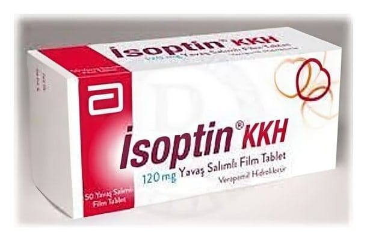

ISOPTIN KKH 120 mg UZATILMIŞ SALIMLI TABLET, 50 ADET

Ne için kullanılır
KT · Bölüm 1İSOPTİN KKH 120 mg uzatılmış salımlı tablet, kalp kasının yeterli miktarda oksijenle beslenememesinden meydana gelen kalp rahatsızlıklarının tedavisinde, kalp ritmi ile ilgili belirli bazı rahatsızlıkların tedavisinde ve yüksek tansiyon vakalarının tedavisinde kullanılan bir ilaçtır. İSOPTİN , 50 uzatılmış salımlı tabletlik blister ambalajda satılmaktadır. İSOPTİN KKH 120 mg uzatılmış salımlı tabletin etkin maddesi olan verapamil hidroklorür (HCl), kalsiyum kanal blokeri veya kalsiyum antagonisti olarak adlandırılan bir ilaç grubuna aittir.
İSOPTİN®KKH 120 mg uzatılmış salımlı tablet aşağıdaki durumlarda kullanılmaktadır: - Kalp kasının yeterli miktarda oksijen ile beslenememesinden meydana gelen rahatsızlıkların yol açtığı angina pektoris (göğüs ağrısı veya göğüste sıkışma hissi) şikayetlerinde: - Efor altında göğüs ağrısı: kronik stabil angina (efor anginası) - İstirahat halinde göğüs ağrısı: anstabil angina pektoris (kreşendo angina, istirahat anginası) - Kalp damarlarının daralmasına bağlı göğüs ağrısı: vazospastik angina pektoris (Prinzmetal angina, Varyant angina)
- Kalp krizinden sonra kalp yetmezliği gelişmemiş Angina pektoris hastalarında, Beta blokerler (kalp ritminin yükseldiği veya kan dolaşımının bozulmuş olduğu durumlarda kullanılan ilaçlar) ile tedavi uygulanmıyor ise - Kalp ritmi bozukluklarında: - Paroksimal supravertriküler taşikardi (nöbetler halinde ortaya çıkan, kalp kulakçığından kaynaklanan yüksek hızlı kalp ritmi bozukluğu) - Hızlı AV (atriyoventriküler düğüm) iletisi durumunda (Wolf f-Parkinson-White (WPW) sendromu veya Lown-Ganong-Levine sendromları dışında) atriyal flatter/fibrilasyon (patolojik yani çok aşırı seviyede artmış kalp hızı ile seyreden kalp kulakçığı kaynaklı kalp ritim bozuklukları) - Yüksek tansiyon vakalarında